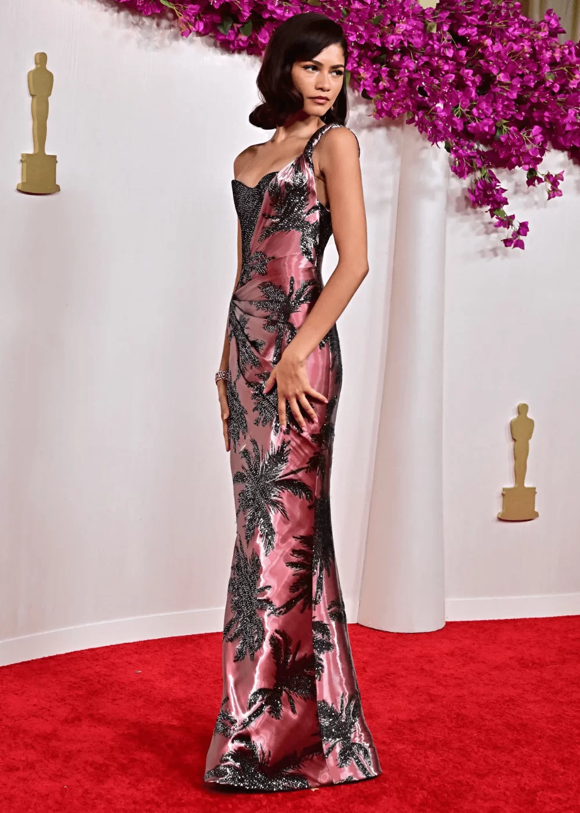

<!DOCTYPE html>
<html lang="pt-br">

<head>
    <meta charset="UTF-8">
    <meta name="viewport" content="width=device-width, initial-scale=1.0">
    <title>fashion news</title>
</head>
<link rel="stylesheet" href="style.css">

<body>
</body>
<header>
    <h1><text-aling:center>fashion news</text-aling:center></h1>
    <h6>noticias sobre moda</h6>
    
</header>
novidades todos os dias


<!-- <ksjsjkak--> 

</html>
<section>      
    <div> <h2> conheça nossas matérias </h2>
        <p>looks oscar 2024</p>
        <p> Zendaya impressionou com um rosa, chegando ao tapete vermelho em um vestido brilhante de Armani Privé de uma alça só.<p>

        </div>

     